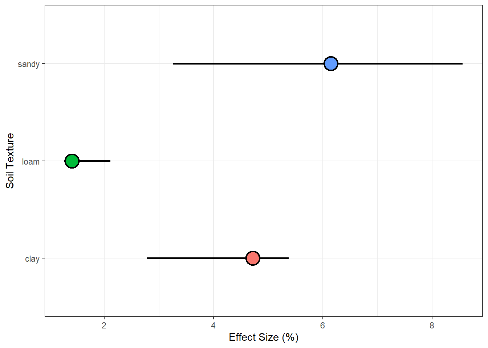

A compilation of methods and funtions for meta-analytic data in R
Author
Nicolas Giordano
Published
October 24, 2022
Summary
Lack of agreement in scientific findings derives in the need of exploring meta-analytic techniques. Systematic reviews tend to provide an UNBIASED method for answering specific questions. This code glimpses my personal experience while conducting a meta-analysis. I expect to help by sharing my own mistakes but also interesting functions to make meta-analytic research more friendly and approachable.
Data Collection
SCOPUS QUERYS
Lining out the search query one step at a time for REPLICABILITY
Test potential factor driving the size of the observed effects .
We will utilize bootstrapping techniques and parallel processing for making the code run faster.
Produce a forest plot.
Meta-analytic data
As an example we will use data from split N application in with crops. This meta analysis is comparing whether applying N on a single dose or splitting(2 splits, 3 splits or just split, regardless or number of splits) has any effect on wheat yields.
It does also compared how different factors (called moderators if categorical) affect the size of the observed effects.
# Run pooled modelmod =rma(yi = RR,vi = VAR,weights = W,#control = list(optimizer="optimParallel", ncpus=3),data = data.imp_es)summary(mod)
Random-Effects Model (k = 1311; tau^2 estimator: REML)
logLik deviance AIC BIC AICc
1066.6376 -2133.2752 -2129.2752 -2118.9197 -2129.2660
tau^2 (estimated amount of total heterogeneity): 0.0079 (SE = 0.0004)
tau (square root of estimated tau^2 value): 0.0891
I^2 (total heterogeneity / total variability): 91.00%
H^2 (total variability / sampling variability): 11.11
Test for Heterogeneity:
Q(df = 1310) = 12675.2789, p-val < .0001
Model Results:
estimate se zval pval ci.lb ci.ub
0.0212 0.0045 4.7560 <.0001 0.0125 0.0300 ***
---
Signif. codes: 0 '***' 0.001 '**' 0.01 '*' 0.05 '.' 0.1 ' ' 1
Show code
# Back transformationtrans(coef(mod))
intrcpt
2.145209
Show code
# I squared statisticmod$I2
[1] 91.00312
4. Influential Studies Diagnosis
When certain studies excert a strong influence in the model output they are consider influential. An influential case can be diagnosed when the cook’s D value for a given study is x 3 times greater than the average Cook’s D of the whole data. Use this citation for the this procedure: Cook 1977, Stephanie 2016
df.plot %>%ggplot()+geom_linerange(aes(ymin =trans(ESTIM_q975), ymax =trans(ESTIM_q025), x = MOD), size =1)+geom_point(aes(x = MOD, y =trans(ESTIM_q500), fill = MOD), shape =21, size =6, stroke =1.2)+coord_flip()+labs(x ="Soil Texture", y ="Effect Size (%)")+guides(fill ="none")+theme_bw()

Source Code
---title: "Systematic reviews procedures in R"subtitle: "A compilation of methods and funtions for meta-analytic data in R"author: "Nicolas Giordano"date: 10-24-2022abstract-title: 'Summary'abstract: 'Lack of agreement in scientific findings derives in the need of exploring meta-analytic techniques. Systematic reviews tend to provide an UNBIASED method for answering specific questions. This code glimpses my personal experience while conducting a meta-analysis. I expect to help by sharing my own mistakes but also interesting functions to make meta-analytic research more friendly and approachable.'format: html: code-tools: true code-fold: true code-summary: 'Show code' code-link: true theme: unitedtoc: truetoc-title: 'Contents'toc-depth: 4toc-location: leftnumber-sections: falsehighlight-style: pygmentssmooth-scroll: true---## Data Collection### SCOPUS QUERYSLining out the search query one step at a time for REPLICABILITY[SCOPUS advanced search](https://www.scopus.com/search/form.uri?display=advanced)SOURCE-ID (78796 OR 59988 OR 38753 OR 15639) ANDTITLE( (wheat OR nitrogen) AND (protein OR yield) ) ANDPUBYEAR \> 1980### How we download a list of abstracts all at once?1. Select all articles2. Click on "Export CSV"3. From the bulleted list select all those features you will need for further exploration of articles (Title, authors, publication year, abstract, etc)4. Download files with the extension *.ris*, which can be handled by *revtools* package.```{r packages, message = FALSE}knitr::opts_chunk$set(echo =TRUE, message =FALSE, warning =FALSE, tidy =TRUE)# Required packages#install.packages("easypackages")library(easypackages)packages("tidyverse")packages("revtools")packages("readxl")packages("janitor")packages("bayestestR")packages("mi")packages("metafor")packages("multidplyr")source("functions_sys_reviews.R")`%nin%`<-Negate(`%in%`)```### 1. First article screeningQuery -SOURCE-ID (78796 OR 59988 OR 38753 OR 15639) AND**TITLE**( (wheat OR nitrogen) AND (protein OR yield) ) ANDPUBYEAR \> 1980```{r search 1, warning=FALSE}path ="articles/articles already searched/"files <-list.files(path = path, pattern ="*.ris")first_search =load_bibliography(path = path, files = files)```### 2. Second article screeningQuery -SOURCE-ID (78796 OR 59988 OR 38753 OR 15639) AND**TITLE-ABS-KEY**( (wheat OR nitrogen) AND (protein OR yield) ) ANDPUBYEAR \> 1980```{r search 2, warning=FALSE}path2 ="articles/new search/"files2 <-list.files(path = path2, pattern ="*.ris")second_search =load_bibliography(path = path2, files = files2)#View(second_search)```### 3. Merge the first and second screenings and get only the articles that WERE NOT SCREENED YET.```{r anti_join}df_final =anti_join(second_search, first_search)write.csv(x = df_final, file ="articles_search_final.csv")```### 4. Run revtools shiny app```{r revtools app}#screen_abstracts(max_file_size = 10)```# HANDS ONIn this section we will:1. Impute missing data using *mi* package2. Calculate effect sizes3. Run a pooled effects model4. Test potential factor driving the size of the observed effects .5. We will utilize bootstrapping techniques and parallel processing for making the code run faster.6. Produce a forest plot.## Meta-analytic dataAs an example we will use data from split N application in with crops. This meta analysis is comparing whether applying N on a single dose or splitting(2 splits, 3 splits or just split, regardless or number of splits) has any effect on wheat yields.It does also compared how different factors (called moderators if categorical) affect the size of the observed effects.The article can be find here [Hu et al 2021](https://www.sciencedirect.com/science/article/pii/S0167198721001847)### Load data and wrangling```{r data}data =read_excel("example_data.xlsx", skip =2) %>% janitor::clean_names()```### 1. Imputation of missing data#### 1.1) Run multiple.imputation()```{r imputation, warning=FALSE,include = FALSE}n.imp =10df.for.imp = data %>%select(contains(c("yield", "sd_")))data.imp = data %>%cbind(# Imputation of SD of grain yield when applying N all at oncemultiple.imputation(n.imp = n.imp, df.variables = df.for.imp, impute.var ="sd_1", var.name ="sd1_imp"),# Imputation of SD of grain yield when splitting N twicemultiple.imputation(n.imp = n.imp, df.variables = df.for.imp, impute.var ="sd_2", var.name ="sd2_imp") )```### 2. Calculate effect sizes & pooled sample variance```{r effect_sizes}data.imp_es = data.imp %>%drop_na(yield_kg_ha_1,reps_1, reps_2, sd1_imp, sd2_imp, yield_kg_ha_2 ) %>%transmute(PAPER_ID = no, TEXTURE = soil_texture, AI = aridity_index, WHEAT_TYPE = whea_type, TILLAGE = tillage,# Response RatioRR =log(yield_kg_ha_2/yield_kg_ha_1),# Calculate pooled sampling varianceVAR =pooled.var(sd.treated = sd2_imp, sd.control = sd1_imp, n.control = reps_1, n.treated = reps_2,m.treated = yield_kg_ha_1, m.control = yield_kg_ha_2),# WeightsW =1/VAR )```### 3. Run pooled model - intercept onlyYou can find more info about I2 statistic here: [Borenstein 2015](https://onlinelibrary.wiley.com/doi/full/10.1002/jrsm.1230), [Higgins and Thompson 2002](https://onlinelibrary.wiley.com/doi/abs/10.1002/sim.1186)```{r model}# Run pooled modelmod =rma(yi = RR,vi = VAR,weights = W,#control = list(optimizer="optimParallel", ncpus=3),data = data.imp_es)summary(mod)# Back transformationtrans(coef(mod))# I squared statisticmod$I2```### 4. Influential Studies DiagnosisWhen certain studies excert a strong influence in the model output they are consider influential. An influential case can be diagnosed when the cook's D value for a given study is x 3 times greater than the average Cook's D of the whole data. Use this citation for the this procedure: [Cook 1977](https://www.tandfonline.com/doi/abs/10.1080/01621459.1979.10481634), [Stephanie 2016](https://www.statisticshowto.com/cooks-distance/)```{r influential_cases}# cooks.distance.rma.uni(model = mod, progbar = T) %>% # saveRDS("output/cooksD_diagnosis.RData")# # plot(readRDS("output/cooksD_diagnosis.RData"))influential_cases =c(2, 3, 4)data.imp_es_ic = data.imp_es %>%mutate(W =case_when(PAPER_ID %in% influential_cases ~0, T~W))```### 5. Run unbootstrapped modelWeight of influential studies is set to zero```{r model 2}mod2 =rma(yi = RR,vi = VAR,weights = W,mods =~0+ TEXTURE,#control = list(optimizer="optimParallel", ncpus=3),data = data.imp_es_ic)```### 6. Run bootstrapped modelsCitation: [Adams et al 1997](https://www.scopus.com/record/display.uri?eid=2-s2.0-0030613897&origin=inward)#### 6.1) Pooled effects, intercept only model```{r bootstrap}bootstrap_rma(data = data.imp_es_ic, response_variable ="RR",moderator =NA, boot_num =16, cores =16)```#### 6.2) Test potential moderators```{r moderators}bootstrap_rma(data = data.imp_es_ic, response_variable ="RR",moderator ="TEXTURE", boot_num =16, cores =16)```#### 6.3) Summarize bootstraps```{r summarise_boot}df.plot =summarise_bootstraps(readRDS("output/RR_TEXTURE_mod.RData"))```#### 6.4) Plot```{r plot}df.plot %>%ggplot()+geom_linerange(aes(ymin =trans(ESTIM_q975), ymax =trans(ESTIM_q025), x = MOD), size =1)+geom_point(aes(x = MOD, y =trans(ESTIM_q500), fill = MOD), shape =21, size =6, stroke =1.2)+coord_flip()+labs(x ="Soil Texture", y ="Effect Size (%)")+guides(fill ="none")+theme_bw()```